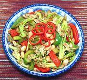

|
Cauliflower Kung PaoChina - Sichuan | ||||
| Serves: Effort: Sched: DoAhead: |
5 side *** 45 min Prep |
An interestingly flavored, moderately spicy stir fry from Sichuan. It goes well with a Chinese menu or can be used as a side dish for Western menus that need a little spicing up. See also Comments. | |||
|
1 5 5 ----- 3 1 3 3 1 ----- 1/2 1 1 1 1/4 1 1/2 ----- 2 ----- 1/2 |
# oz oz ----- med in cl T ----- T T T T c t t ----- T ----- c |
Cauliflower, loose (1) Bell Pepper, green Bell Pepper, red -- Aromatics Scallions Ginger Garlic Red Chili, dry (2) Sichuan Peppercorns (3) -- Sauce Soy Sauce, dark Soy Sauce, light Cornstarch Rice Vinegar Water Salt Sugar ------------ Oil -- Garnish Peanuts, roasted |
Prep - (30 min)
|